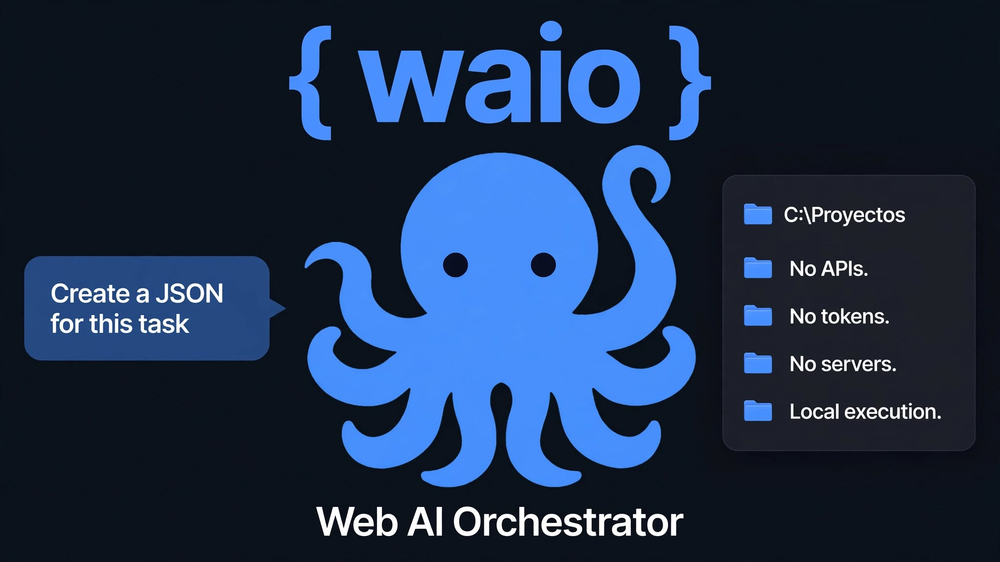

{ waio }
给网页AI一双手。
什么是 WAIO？
WAIO (Web AI Orchestrator) 是一个开源本地引擎，允许网页 AI (DeepSeek, ChatGPT, Gemini, Claude) 在你的电脑上读取、整理和执行操作。AI 生成 JSON，WAIO 执行并返回结果。无需 API，无需 Token，无需云端。
设计极其轻量，可在老旧处理器上流畅运行（如第三代 Intel i3 或 1.6 GHz 双核），无需显卡。
基于文件夹的沙盒
右键点击 = 沙盒。
与其他将沙盒固定在系统文件夹中的代理不同，WAIO 反转了这一模式。右键点击任何文件夹（或 U 盘），选择 "在此处启动 WAIO"，该文件夹即成为沙盒。只有该文件夹中的文档会受到影响，仅此而已。这更安全，也更实用。
v3.3 版本特性
🐙 26 项审计技能
从读取 PDF、创建 Excel/Word、压缩 ZIP 到语音播报。
🔒 4 种安全配置文件
readonly, standard, advanced, debug。带有写入限制和回收站。
⚡ 双线程引擎
如果 JSON 无效或恶意，引擎不会挂起，而是在队列中处理。
🌍 双语设计
命令带有英语和 Linux 格式的别名（ls, cat, rm）。
卫星功能
WAIO 不仅仅是一个引擎。它还包含扩展生态系统的工具：
- 图形查看器 (Visor): 实时监控操作和结果。
- 输出监听 (Escucha Output): 自动将结果复制到剪贴板，以便粘贴到 AI 中。
- Transclip: 为不生成 JSON 的 AI（如 WhatsApp）提供桥梁，翻译简单命令。
项目结构
src/waio-3.3-deliberado/
├── core/ # 基础命令和卫星
├── skills/ # 26 项审计技能
├── comandos/ # 21 个信息性 JSON
├── config/ # waio_config.json, wispout.json, prompt.txt
├── data/ # skills.json
├── rescue_tools/ # 救援工具
├── waio_escucha.py # 引擎（双线程）
├── waio_visor.py # 图形查看器
└── instalador_waio.py + instalar_waio.bat
安装
1. 从 Releases 下载 waio-instalador 文件夹。
2. 运行 instalar_waio.bat。
3. 它会自动创建在 %USERPROFILE%\.waio。
要求：Windows 10/11，Python 3.8+，4GB RAM。